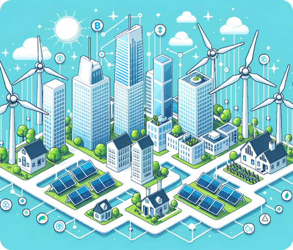

The Role of Blockchain Technology in Facilitating Peer-to-Peer Energy Trading
Empowering Energy Consumers with Decentralized Trading Platforms
Blockchain technology has emerged as a transformative force in various sectors, and the energy industry
is
no exception. In recent years, blockchain has gained prominence for its potential to revolutionize
energy
trading by facilitating peer-to-peer transactions. Unlike traditional energy markets, which rely on
centralized intermediaries, blockchain enables direct interactions between energy producers and
consumers.

Another significant benefit of blockchain technology is its transparency and trustworthiness. The
distributed ledger system used in blockchain ensures that all transactions are recorded and verified by
network participants. This transparency not only reduces the risk of fraud and manipulation but also
builds trust among users. Energy trading platforms built on blockchain technology provide transparent
access to real-time data on energy production, consumption, and pricing, enabling informed decision-making
and fostering greater accountability within the energy market.
Blockchain-based energy trading platforms offer significant efficiency gains compared to traditional
markets. By automating processes such as contract execution, settlement, and billing, blockchain reduces
administrative overhead and minimizes transaction costs. Smart contracts, self-executing contracts coded
on
the blockchain, enable automated energy transactions based on predefined conditions, further streamlining
the trading process. These efficiency improvements translate into cost savings for both energy producers
and consumers, making renewable energy more accessible and affordable for all.
Despite its promise, blockchain technology still faces several barriers to widespread adoption in the
energy sector. Scalability, interoperability, and regulatory uncertainty are among the key challenges that
need to be addressed. Additionally, the integration of blockchain with existing energy infrastructure and
systems poses technical and logistical challenges. However, as technology continues to evolve and
regulatory frameworks mature, blockchain is expected to play an increasingly prominent role in shaping the
future of energy trading.
Blockchain technology has the potential to revolutionize energy trading by decentralizing the market,
increasing transparency, and improving efficiency. By enabling peer-to-peer transactions and fostering
greater energy independence, blockchain paves the way for a more democratized and sustainable energy
future. While challenges remain, ongoing innovation and collaboration are driving the adoption of
blockchain in the energy sector, unlocking new opportunities for renewable energy deployment and
empowering
individuals to take control of their energy choices.